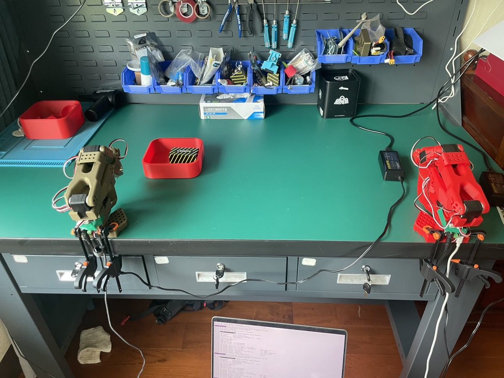

Workshop paper · 2026
Split-Half Critic Updates Improve Short-Horizon SAC AUC on Three MuJoCo Tasks
Accepted at the RLC 2026 Workshop on Reinforcement Learning Beyond Rewards (RLBRew). Non-archival.
Mathematics · Reinforcement Learning
Learning how agents make decisions.
I’m a first-year Mathematics student at Carnegie Mellon University, planning an additional major in Artificial Intelligence. I’m interested in reinforcement learning, decision making, and embodied intelligence.
One paper · one real-system project
Workshop paper · 2026
Accepted at the RLC 2026 Workshop on Reinforcement Learning Beyond Rewards (RLBRew). Non-archival.

Independent project · 2026
A reproduction-first real-robot imitation-learning pipeline spanning calibration, teleoperation, dataset collection, ACT training, deployment, and repeated evaluation. In the documented 20-trial evaluations, the narrow 20-demonstration baseline achieved 7/20 successes, while the broader 50-demonstration setup achieved 20/20 under its varied-pose evaluation protocol.
About
At CMU, I’m building a mathematical foundation while exploring how learning algorithms behave in both simulation and physical systems.
Interests